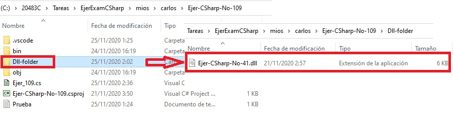
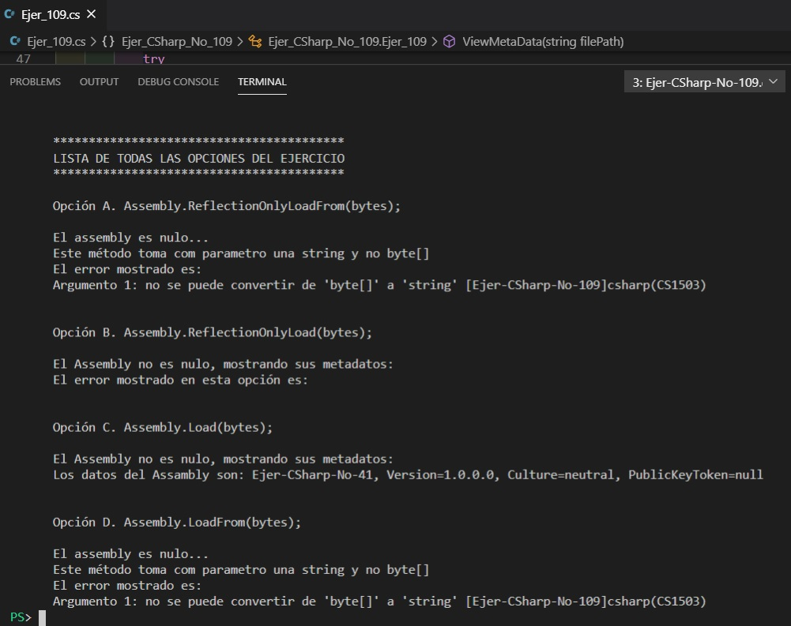

|
You are developing code for an application that retrieves information about Microsoft .NET Framework
assemblies. The following code segment is part of the application (line numbers are included for reference only): You need to insert code at line 04. The code must load the assembly. Once the assembly is loaded, the code must be able to read the assembly metadata, but the code must be denied access from executing code from the assembly. Which code segment should you insert at line 04? A. Assembly.ReflectionOnlyLoadFrom(bytes); B. Assembly.ReflectionOniyLoad(bytes); C. Assembly.Load(bytes); D. Assembly.LoadFrom(bytes); Correct Answer: C Section: Volume B Explanation Explanation/Reference: ExplicaciónLa explicación esta dada en la ejecución del programa: *********************************************** LISTA DE TODAS LAS OPCIONES DEL EJERCICIO ***********************************************
Respuesta:La respuesta correcta es la que es dada la opción C. Es necesario mencionar que primero tenemos que ubicar un archivo .dll o un ensamblado como se muestra en la siguiente imagen. Es necesario para poder primero leer en bytes y luego cargarlo con la clase Assembly que extraerá posteriormente los metadatos a mostrar. Mostrando de manera visual la respuesta:Fuentes:https://docs.microsoft.com/es-es/dotnet/api/system.reflection.assembly.reflectiononlyload?view=net-5.0#System_Reflection_Assembly_ReflectionOnlyLoad_System_Byte___ https://docs.microsoft.com/es-es/dotnet/api/system.reflection.assembly.reflectiononlyload?view=net-5.0 https://www.csharpcodi.com/csharp-examples/System.Reflection.Assembly.ReflectionOnlyLoad(byte[])/ |